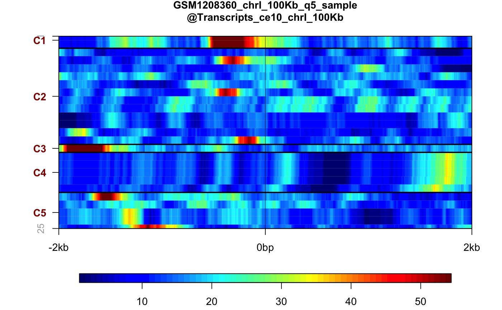

Draw the heatmap plot from PlotSetArray,
PlotSetList, PlotSetPair classes or properly
formatted list (see details) in active graphics window.
Axes and titles, keys and other plot elements are controlled by function
parameters.
plotHeatmap(plotset, main = "", labels = NA, legend = TRUE, keepratio = FALSE, plotScale = "no", sortrows = FALSE, clusters = 5L, clstmethod = "kmeans", include = NULL, ssomt1 = 2L, ssomt2 = 2L, cex.main = 16, cex.lab = 12, cex.axis = 12, cex.legend = 12, xlab = "", ylab = "", autoscale = TRUE, zmin = 0, zmax = 10, xlim = NULL, ln.v = TRUE, s = 0.01, indi = TRUE, o_min = NA, o_max = NA, colvec = NULL, clspace = NULL, pointsize = 12, embed = FALSE, ggplot = FALSE, raster = FALSE, ...) # S4 method for list plotHeatmap(plotset, main = "", labels = NA, legend = TRUE, keepratio = FALSE, plotScale = "no", sortrows = FALSE, clusters = 5L, clstmethod = "kmeans", include = NULL, ssomt1 = 2L, ssomt2 = 2L, cex.main = 16, cex.lab = 12, cex.axis = 12, cex.legend = 12, xlab = "", ylab = "", autoscale = TRUE, zmin = 0, zmax = 10, xlim = NULL, ln.v = TRUE, s = 0.01, indi = TRUE, o_min = NA, o_max = NA, colvec = NULL, clspace = NULL, pointsize = 12, embed = FALSE, ggplot = FALSE, raster = FALSE, ...) # S4 method for PlotSetPair plotHeatmap(plotset, main = "", labels = NA, legend = TRUE, keepratio = FALSE, plotScale = "no", sortrows = FALSE, clusters = 5L, clstmethod = "kmeans", include = NULL, ssomt1 = 2L, ssomt2 = 2L, cex.main = 16, cex.lab = 12, cex.axis = 12, cex.legend = 12, xlab = "", ylab = "", autoscale = TRUE, zmin = 0, zmax = 10, xlim = NULL, ln.v = TRUE, s = 0.01, indi = TRUE, o_min = NA, o_max = NA, colvec = NULL, clspace = NULL, pointsize = 12, embed = FALSE, ggplot = FALSE, raster = FALSE, ...) # S4 method for PlotSetList plotHeatmap(plotset, main = "", labels = NA, legend = TRUE, keepratio = FALSE, plotScale = "no", sortrows = FALSE, clusters = 5L, clstmethod = "kmeans", include = NULL, ssomt1 = 2L, ssomt2 = 2L, cex.main = 16, cex.lab = 12, cex.axis = 12, cex.legend = 12, xlab = "", ylab = "", autoscale = TRUE, zmin = 0, zmax = 10, xlim = NULL, ln.v = TRUE, s = 0.01, indi = TRUE, o_min = NA, o_max = NA, colvec = NULL, clspace = NULL, pointsize = 12, embed = FALSE, ggplot = FALSE, raster = FALSE, ...) # S4 method for PlotSetArray plotHeatmap(plotset, main = "", labels = NA, legend = TRUE, keepratio = FALSE, plotScale = "no", sortrows = FALSE, clusters = 5L, clstmethod = "kmeans", include = NULL, ssomt1 = 2L, ssomt2 = 2L, cex.main = 16, cex.lab = 12, cex.axis = 12, cex.legend = 12, xlab = "", ylab = "", autoscale = TRUE, zmin = 0, zmax = 10, xlim = NULL, ln.v = TRUE, s = 0.01, indi = TRUE, o_min = NA, o_max = NA, colvec = NULL, clspace = NULL, pointsize = 12, embed = FALSE, ggplot = FALSE, raster = FALSE, ...)
| plotset | The dataset to plot - can be |
|---|---|
| main | The main title of the plot, shown in top-centre part of the figure; defaults to NULL (not visible) |
| labels | The character vector giving sub-titles of heatmaps (plotted over the heatmap and below the main title). The defaults NULL value indicates that feature/track file names will be used to generate the sub-titles. |
| legend | if TRUE plot the colour key |
| keepratio | If TRUE keep 1:1 aspect ratio of the figure; defaults to FALSE |
| plotScale | scale the available data before plotting, can be "linear" (do not scale, default), "log2" or "zscore" |
| sortrows | If |
| clusters | The number of cluster for "kmeans" and "hclust", ignored for "ssom", defaults to 5L |
| clstmethod | Determines the heatmap clustering algorithm "kmeans" for
k-means (default, see |
| include | The logical vector indicating if given subplot should
influence clustering and sorting, if given element is FALSE the sub-heatmap
will be still plotted, and the order of data rows will be determined by
clustering/sorting other sub-heatmaps, defaults to NULL, which incluses all
- equivalent to |
| ssomt1 | Determines , the dimensionality of SOM - number of neurons in 1st dimension, number of resulting clusters equals ssomt1*ssomt2, defaults to 2L |
| ssomt2 | Determines , the dimensionality of SOM - number of neurons in 2st dimension, number of resulting clusters equals ssomt1*ssomt2, defaults to 2L |
| cex.main | Main title font size in points, defaults to 16 |
| cex.lab | Axis labels font size in points, Defaults to 12 |
| cex.axis | Axis numbers font size in points, defaults to 12 |
| cex.legend | Keys labels font size in points, defaults to 12 |
| xlab | label below x-axis |
| ylab | label below y-axis |
| autoscale | if TRUE the colour keys will be auto scaled |
| zmin | global minimum value on colour key, ignored if |
| zmax | global maximum value on colour key, ignored if |
| xlim | the x limits (x1, x2) of the plot. Note that x1 > x2 is allowed
and leads to a "reversed axis". The default value, NULL, indicates that the
whole range present in |
| ln.v | Determins if vertical guide line(s) should be plotted (TRUE) or ommitted (FALSE). For anchored plots 2 lines indicating the start and end of anchored distance are plotted. |
| s | The saturation value used to auto scale colour key limits, defaults to 0.01 |
| indi | If TRUE (defaults) the independent colour keys will be plotted below heatmaps, if FALSE the commmon colour key is shown rightmost |
| o_min | vector of length equal to number of sub heatmaps determining
minimum value on color key for each sub plot, if NULL (default) or NA the
global settings are used, ignored in |
| o_max | vector of length equal to number of sub heatmaps determining
maximum value on color key for each sub plot, if NULL (default) or NA the
global settings are used, ignored in |
| colvec | The vector or list of colour values used generate sub-heatmaps
colorspaces. If NULL (default) the automatically generated colour
values will be used for all sub-heatmaps. If single color is provided, the
sequential colorspace reging from given color to white will be created.
If the vector of colors is provided, the continous pallete will be created
using these colors. NA value indicates default color pallete to be used for
give sub-heatmap. Accepted values are: vector of any of the three kinds
of R colour specifications, i.e., either a color name (as listed by
colors()), a hexadecimal string of the form "#rrggbb" or "#rrggbbaa" (see
rgb), or a positive integer i meaning palette()[i]. See
|
| clspace | The colours pace of the heatmap, see
|
| pointsize | The default font point size to be used for plots. Defaults to 12 (1/72 inch). |
| embed | If TRUE plot single (first) heatmap without using grid system.
Useful to embed heatmap in complex layouts, see
|
| ggplot | Use ggplot2 package instead of standard R graphics, defaults to FALSE |
| raster | The bitmap raster is used to plot the heatmap image, see
"useRaster" option in |
| ... | parameters passed to internal plotting function |
The cluster report data.frame, giving cluster assignments and
sorting order for each feature. It contains following columns:
originalOrder - number of feature (row) in GFF/BED, can be used to restore original order after sorting on cluster ID
ClusterID - the numeric ID of the cluster. The topmost cluster on the heatmap is annotated with 1, and the bottom cluster with k, where k equals to number of clusters selected, exported only if clustering is enabled
SortingOrder - the order imposed on heatmap by sorting by mean row(s) values, exported only if sorting is enabled
FinalOrder - the final order of heatmap's rows, this can be influenced by sorting and clustering; 1 indicates topmost row
list: Method for signature list with
following format: list[[FEATURE]][[TRACK/MOTIF]][[KEY_VALUE]]
PlotSetPair: Method for signature PlotSetPair
PlotSetList: Method for signature PlotSetList
PlotSetArray: Method for signature PlotSetArray
Other plotting functions: getPlotSetArray,
plotAverage, plot
# Get the paths of example files bed1 <- system.file("extdata", "Transcripts_ce10_chrI_100Kb.bed", package="seqplots") bed2 <- system.file("extdata", "GSM1208361_chrI_100Kb_PeakCalls.bed", package="seqplots") bw1 <- system.file("extdata", "GSM1208360_chrI_100Kb_q5_sample.bw", package="seqplots") #If required install C. elegans genomic package from Bioconductor if(!"BSgenome.Celegans.UCSC.ce10" %in% BSgenome::installed.genomes()) { if(.Platform$OS.type != "windows" || .Machine$sizeof.pointer != 4) { source("http://bioconductor.org/biocLite.R") biocLite("BSgenome.Celegans.UCSC.ce10") } } #Get getPlotSetArray for track and feature files if(.Platform$OS.type != "windows" || .Machine$sizeof.pointer != 4) { plotset1 <- getPlotSetArray(bw1, c(bed1, bed2), 'ce10') } else { load(system.file("extdata", "precalc_plotset.Rdata", package="seqplots")) }#>#>#>#># equivalent to plot(plotset1, what='h') or plotset1$plot(what='h') plotHeatmap(plotset1[1])